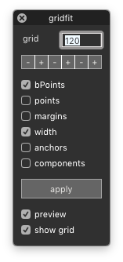

gridfit¶
-
class
RoundToGridDialog[source]¶ Bases:
hTools3.dialogs.glyphs.base.GlyphsDialogBaseA dialog to round points, metrics, anchors and components in the selected glyphs to a grid.
from hTools3.dialogs.glyphs.gridfit import RoundToGridDialog RoundToGridDialog()
-
anchors¶ A boolean indicating if anchor positions should be rounded to grid.
-
bPoints¶ A boolean indicating if bPoints should be rounded to grid.
-
components¶ A boolean indicating if component positions should be rounded to grid.
-
glyphWidth¶ A boolean indicating if the glyph width should be rounded to grid.
-
gridSize¶ The size of the grid as set by the user.
-
key= 'com.hipertipo.hTools3.dialogs.glyphs.gridfit'¶
-
margins¶ A boolean indicating if the glyph margins should be rounded to grid.
-
points¶ A boolean indicating if points should be rounded to grid.
-
settings= {'layers': False, 'width': True, 'gridSize': 30, 'anchors': False, 'components': False, 'margins': False, 'bPoints': True, 'previewPointRadius': 5, 'points': False}¶
-
title= 'gridfit'¶
-